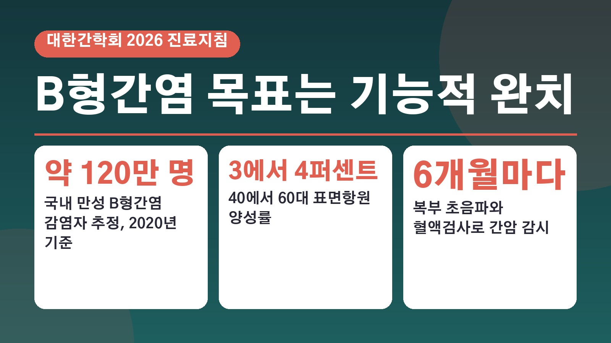
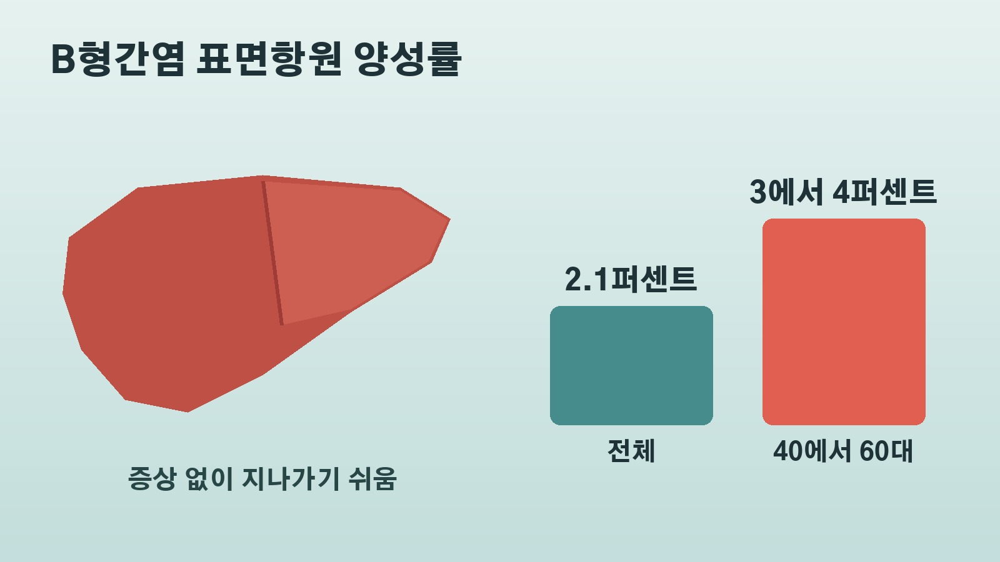

예방접종 이전 세대 40에서 60대 B형간염 양성률 3에서 4퍼센트, 2026 진료지침이 내건 기능적 완치 목표와 6개월 간암 감시

건강검진 결과지에서 B형간염 항목을 보고도 별 증상이 없으니 그냥 넘기신 분들 적지 않으실 거예요. 그런데 대한간학회가 새로 낸 2026 만성 B형간염 진료지침을 보면, 이 병이 여전히 우리나라 간암의 가장 큰 원인이고 치료 목표도 한 단계 달라졌어요. 누가 특히 신경 써야 하는지, 새 지침에서 무엇이 바뀌었는지, 그리고 완치라는 말을 들은 뒤에도 무엇을 계속해야 하는지 차례로 정리해 볼게요.
증상 없이 지나가는 만성 B형간염, 누가 신경 써야 하나
진료지침에 따르면 국내 만성 B형간염 바이러스 감염자는 2020년 기준 약 120만 명으로 추정돼요. 해마다 약 1만 명이 간암으로 숨지는데, 그 가운데 약 60퍼센트가 B형간염 바이러스 때문입니다.
문제는 대부분 증상이 없다는 점이에요. 증상이 있더라도 무력감, 피로감, 소화불량, 오른쪽 윗배의 불편감 정도가 서서히 나타나서 이것 때문에 병원을 찾는 경우는 드물어요. 어릴 때 감염된 뒤 오랫동안 모르고 지내다가 건강검진이나 헌혈 과정에서 우연히 알게 되는 경우도 있습니다.
백신과 국가 예방접종 덕분에 감염률은 많이 줄었어요. 2024년 B형간염 표면항원 양성률은 2.1퍼센트였습니다. 하지만 예방접종이 도입되기 전에 태어난 40에서 60대는 여전히 3에서 4퍼센트 수준이에요. 대한간암학회 통계로 2022년 간암은 전체 암 사망자의 12.2퍼센트를 차지해 폐암 다음으로 많았고, 15세에서 64세 사이에서는 암 사망 원인 1위, 50대에서도 암 가운데 사망률 1위였어요. 한창 일하는 나이의 문제라는 뜻입니다.
새 지침의 분류, 중등도바이러스혈증이면 치료 시작
이번 지침은 혈액 속 바이러스 양을 기준으로 환자를 나누는 새 분류법을 내놨어요. 그중에서도 바이러스 양이 중간 수준인 중등도바이러스혈증 환자는 간암 발생 위험이 가장 높다고 보고 항바이러스 치료를 시작하도록 권고했습니다.
지금 승인된 치료제는 테노포비어 계열 두 가지와 엔테카비어, 베시포비어 같은 먹는 항바이러스제예요. 오래 복용하면 간 염증이 줄고 간경변과 간암을 막으며 간질환으로 인한 사망을 줄이는 효과를 기대할 수 있어요. 다만 이 약들로는 간세포 안에 숨어 있는 바이러스 유전물질까지 없애기 어렵고, 표면항원이 사라지는 경우도 매우 드뭅니다.
기능적 완치란 무엇이고 무엇이 아닌가
그래서 지침이 현실적인 치료 목표로 내건 것이 기능적 완치예요. 혈액 속 B형간염 바이러스 DNA와 표면항원이 모두 사라진 상태를 말합니다. 바이러스를 몸에서 완전히 없애 감염 이전으로 되돌리는 멸균적 완치는 지금 기술로는 어렵기 때문에, 그 바로 아래 단계를 목표로 삼은 셈이에요.
이 목표가 의미 있는 이유도 있어요. 7만여 명을 대상으로 한 코호트 연구에서 표면항원이 사라진 경우 간경변증, 간세포암, 전체 사망 위험이 줄어드는 것과 관련이 있었다고 해요.

하지만 기능적 완치가 바이러스가 완전히 사라졌다는 뜻은 아니에요. 간세포 핵 안이나 사람 유전체에 끼어든 바이러스 유전물질은 남아 있을 수 있습니다. 서울성모병원 소화기내과 장정원 교수는 조혈모세포이식이나 혈액암 치료처럼 면역을 강하게 누르는 상황에서는 남은 바이러스가 다시 늘어날 수 있다고 설명했어요.
일본에서 먼저 승인된 신약, 국내 도입은 언제쯤
기능적 완치를 겨냥한 신약 개발도 활발해요. 지난 8월 일본에서 베피로비르센이라는 약이 승인을 받았습니다. 임상 3상 연구에서 표면항원 수치가 3000 이하인 성인의 19퍼센트가 기능적 완치에 이르렀는데, 현재 표준 치료의 기능적 완치율은 1퍼센트에 그쳤어요. 여기서 기능적 완치는 모든 치료를 멈춘 뒤 최소 24주 동안 바이러스 DNA와 표면항원이 검출되지 않는 상태를 뜻합니다.
국내 도입 시기에 대해 장 교수는 내년 중반 이후, 아마 하반기쯤 도입을 시도할 수 있을 것으로 보지만 많은 노력이 필요하다고 했어요. 주의할 점도 있습니다. 투여 뒤 2에서 3개월쯤 간 수치가 크게 오를 수 있는데, 억눌려 있던 면역이 되살아나 바이러스를 공격하는 과정에서 간세포도 함께 손상되기 때문이라고 해요. 기능적 완치가 장기적으로 간경변 합병증이나 간암 감소로 이어지는지도 앞으로 확인해야 할 부분입니다.
완치 판정 뒤에도 6개월마다 간암 감시
이번 소식에서 가장 실용적인 대목은 관리를 멈추면 안 된다는 점이에요. 장 교수는 간 수치가 좋다고, 바이러스가 억제됐다고, 기능적 완치에 도달했다고 안심해서는 안 되며, 약을 먹지 않는 환자도 6개월마다 복부 초음파와 알파태아단백 혈액검사로 간암 감시를 이어가야 한다고 강조했어요. 간경변이 있거나 나이가 많은 경우, 음주 같은 위험요인이 있거나 간암 가족력이 있으면 더 꾸준한 관리가 필요하다고 했고요.
약을 끊을지도 혼자 정할 일이 아니에요. 간암이나 간경변이 없고 간 섬유화도 심하지 않으면 면밀한 추적관찰을 전제로 중단을 고려할 수 있지만, 간암을 앓았던 환자는 재활성화 위험 때문에 약을 유지하는 편이 바람직할 수 있다는 설명입니다.
실제 관리 현황은 아직 아쉬워요. 2020년 국가 자료 분석에서 B형간염의 실질적인 관리율은 39.4퍼센트, 전체 환자 치료율은 22.2퍼센트였고, 치료 대상자 가운데 실제 치료를 받는 비율도 67.3퍼센트에 머물렀습니다. 장 교수는 예전에 쓰던 건강보균자라는 표현이 간 수치만 정상이면 괜찮다는 잘못된 인식을 남겼다고 지적했어요.
정리하면 40에서 60대는 여전히 B형간염 양성률이 높은 세대이고, 새 지침은 바이러스 억제를 넘어 기능적 완치를 목표로 잡았지만 그 단계에 이르러도 6개월마다 간암 감시는 계속해야 한다는 이야기예요. 이미 감염 사실을 알고 계신다면 6개월 간격의 간암 감시가 지켜지고 있는지가 가장 먼저 짚어 볼 부분이에요.
참고한 기사: 뉴시스 평생 모르고 살았다, 조용한 침입자 B형간염 2026년 10월, 메디칼업저버 B형간염 치료 목표, 바이러스 억제 넘어 기능적 완치로 2026년 10월, 콜뉴스24 국내 간암 사망 60퍼센트가 B형간염, 증상 없어 모르고 지내는 40에서 60대 많다 2026년 10월
태그
B형간염 만성B형간염 기능적완치 대한간학회 진료지침 간암 간암검진 복부초음파 표면항원 베피로비르센